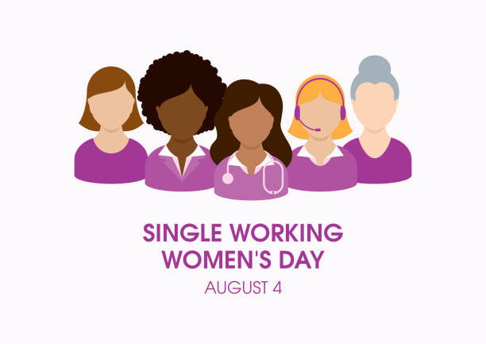

COUNTDOWN
DAYS
HOURS
MINUTES
SECONDS
About

Single women, especially those in the labor force, contribute a whole lot to our society, and Single Working Women’s Day,
held each year on August 4, aims to highlight this very fact. This unofficial national day
falls within Single Working Women’s Week. As its name implies, this day celebrates all those
women who are gainfully employed.
How to celebrate?
Give yourself a day off
If you are a single working woman, celebrate this day doing what you love most. Grab lunch at your favorite restaurant, take the day off to relax, or spend time with loved ones. Pamper yourself on this day, because you deserve it.
Celebrate all the single women in your life
We all know at least one working woman who is happily single. Today is your chance to show them you value their contributions. Find ways to celebrate their existence in ways you know they will love, whether it is gifting them a spa day or cooking them a special meal.
Help reduce the stigma
In some places and cultures, being a working woman who is single is still not completely accepted. Identify opportunities with organizations working to reduce this stigma, and volunteer your talents.